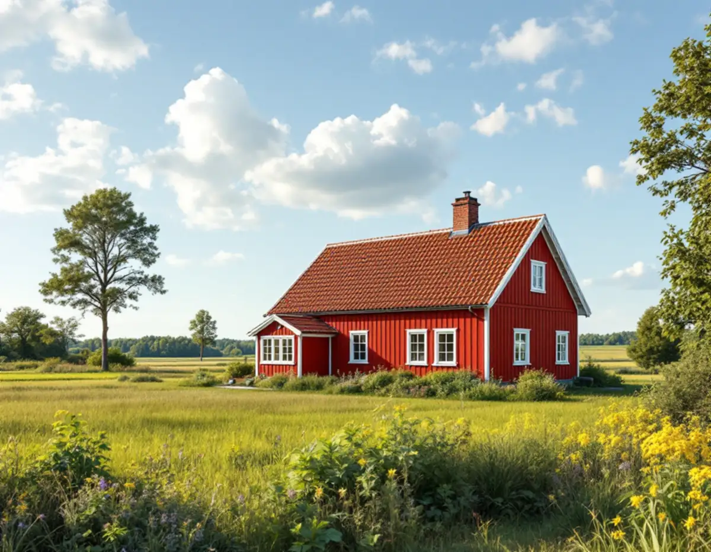
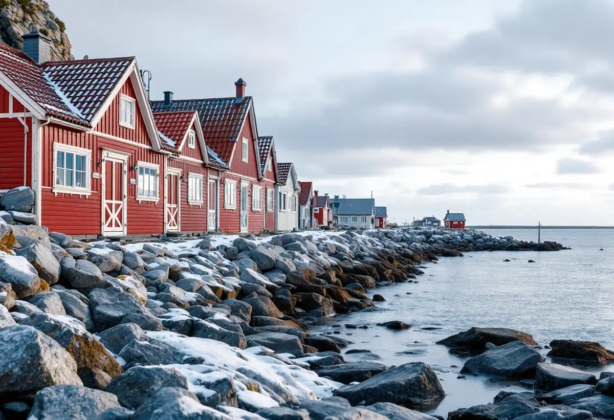

Takbyte i Norrtälje
Byte av tegel-, betong- och plåttak.
Takbyte i Norrtälje →Norrtälje kommun sträcker sig från Rimbo i väster och Hallstavik i norr till Väddö och skärgården mot Ålands hav. Vi är takläggare i Norrtälje för villor, fritidshus och äldre hus i bland annat Norrtälje stad, Rimbo, Hallstavik och Grisslehamn.

Runt Norrtälje stad finns flera områden med villor och radhus. Rimbo och Hallstavik växte efter kriget – enligt SCB gick Rimbo från knappt 1 700 invånare 1960 till omkring 3 400 år 1975, och båda orterna fick många nya villor. Utanför tätorterna finns gårdar, kustbyar och tusentals fritidshus, många på tomter där vägen slutar en bit från huset.
På villorna i tätorterna är pannor av betong eller tegel det vanliga, medan fritidshusen oftare har papp eller plåt. Skadorna sitter för det mesta i underlaget, inte i själva täckningen. På ett sommarhus är det vanligt att råsponten är tunn och att takfoten saknar ordentlig luftspalt. Det märks först när huset börjar användas på vintern.
Mot Ålands hav och i ytterskärgården sliter vinden på nockar, gavlar och plåtdetaljer. Inåt land, i skogsbygden, är det snarare skugga och barr som gör att taket håller fukt. Vi anpassar därför både material och utförande efter var huset ligger, inte bara efter hur gammalt det är.
Oavsett om du behöver ett komplett takbyte eller en riktad renovering ger vi en tydlig bedömning och offert. Vi arbetar även i grannområden – se alla områden vi arbetar i.

På fritidshus från mitten av 1900-talet ser vi ofta tunt underlag, papp som spruckit i skarvarna och takfötter där vatten trängt in. Har stugan byggts till i flera omgångar finns dessutom skarvar mellan takfall som är svåra att hålla täta.
I Rimbo och Hallstavik är det typiska fallet ett pannbelagt villatak där underlagspapp och läkt har tjänat ut. Då håller en hel omläggning oftast längre än att laga punktvis.
Gamla plåttak på uthus och gäststugor har ofta tappat färgen och börjat rosta i falsarna. Ibland räcker en ommålning, men när plåten är genomrostad är nytt tak enda hållbara vägen. Vi säger vad vi ser och föreslår den åtgärd som passar husets skick.
Bygglov hanteras av Norrtälje kommun. Nytt takmaterial på ett en- eller tvåbostadshus kräver i regel inget lov sedan december 2025, men på kommunens sida om lovbefriade åtgärder ser du hur du kontrollerar om fastigheten ligger i ett särskilt värdefullt område, där lov kan krävas.
Kommunen ger inga bindande besked per telefon eller e-post – för det söker du frivilligt bygglov. Höjs taket kan det räknas som tillbyggnad, så stäm av med kommunen innan takets form eller höjd ändras.
Tänk också på årstiden. Ett tak på en ö eller långt ut på Väddö läggs helst under en period med stabilt väder, och leveranser kan behöva bokas i god tid. Vi går igenom tidplanen redan vid besöket, så att ni vet när huset kan stå med öppet tak.
Med 27 352 fritidshus enligt SCB har Norrtälje fler fritidshus än någon annan svensk kommun. Kommunen uppger att ungefär en fjärdedel av brukarna vistas här större delen av året, och många hus har gått från sommarbruk till åretruntboende.
För oss betyder det att ett takjobb ofta också blir ett vindsjobb. När huset värms upp på vintern måste taket ventileras så att fukt inte fastnar under råsponten – läs hur vi lägger upp en takrenovering i Norrtälje.
Vanliga åtgärder i samband med permanentning är ny råspont där den gamla inte bär, ventilerade takfötter och nya genomföringar för ventilation och skorsten. Det är arbeten som blir enklare och billigare att göra när taket ändå är öppet.
Hallstavik har vuxit fram som brukssamhälle kring pappersbruket, och Visit Roslagen beskriver det gamla brukssamhället som kulturskyddat. Där bör material och utseende stämmas av med kommunen innan takarbetet planeras.
Grisslehamn på Väddö ligger längst ut mot Ålands hav. Längs kusten väljer vi plåt och infästningar med tanke på vind och salt, och vid ett takbyte ingår vindskivor och nockar i bedömningen.
Enligt SCB hade Hallstavik omkring 3 800 invånare 1960 och drygt 5 100 år 1975, och villorna från tillväxtåren har nu tak som ofta behöver ses över. Där är en omläggning med nytt underlag det vanligaste uppdraget.
Byte av tegel-, betong- och plåttak.
Takbyte i Norrtälje →Riktade åtgärder som förlänger takets liv.
Takrenovering i Norrtälje →Bedömning av skick inför beslut.
Takbesiktning i Norrtälje →Nytt ytskydd på plåttak.
Takmålning i Norrtälje →Skonsam tvätt och mossbehandling.
Taktvätt i Norrtälje →Nytt plåttak och plåtarbeten.
Plåttak i Norrtälje →Vi utgår från Bromma och tar uppdrag i hela Norrtälje kommun, från tätorterna till skärgården. Längre resor samordnar vi så att besök och arbete samlas i färre turer.
Läs mer om tak på villa eller jämför takbyte och takrenovering innan du bestämmer dig.
Vi arbetar även i Vallentuna.
Takläggare i Vallentuna →Vi arbetar även i Österåker.
Takläggare i Österåker →Vi arbetar även i Täby.
Takläggare i Täby →